Für Gastronomie in Ostfriesland und Friesland
Abends um acht sucht jemand etwas zu essen.
Findet er dich?
Google und die KI-Assistenten empfehlen, was sie lesen können. Wer online nichts hinterlässt, taucht in dieser Empfehlung nicht auf – egal wie gut das Essen ist.
Ich schaue mir deinen Betrieb an und schicke dir schwarz auf weiß, was gefunden wird und was fehlt. Kostenlos, ohne Termin, ohne Haken.
Kein Abo, kein Vertreterbesuch. Ein Blatt Papier mit dem, was ist.
Was ich hier vorgefunden habe
Ich habe nachgezählt.
Bevor ich irgendwem etwas verkaufe, wollte ich wissen, wie es hier wirklich aussieht. Also habe ich jeden Gastronomiebetrieb in Ostfriesland und Friesland erfasst und nachgesehen, was von ihm online zu finden ist.
Stand August 2026, eigene Erhebung über offene Kartendaten. Wenn dein Betrieb dazugehört: Das ist keine Schande – es ist die Regel. Und genau deshalb ist es eine Gelegenheit.
Aus der Werkstatt
Meine Kunden
Schilder, Fahrzeuge, Speisekarten, Erscheinungsbilder – und bei einigen inzwischen auch das, was online über sie zu finden ist.



Namen und Zeichen genannt mit Einverständnis der Betriebe.
30 Sekunden
Fünf Fragen. Hak ab, was auf dich zutrifft.
Nichts wird gespeichert, solange du nichts abschickst. Das läuft nur in deinem Browser.
Hak ab, was bei dir schon läuft. Unten steht dann, was das bedeutet.
Der Preis des Nichtstuns
Rechne einmal selbst nach.
Nicht gefunden zu werden kostet kein Geld – es verhindert welches. Deshalb fällt es nicht auf. Ein Freitagabend, grob gerechnet:
Zwei starke Abende die Woche, das ganze Jahr: über 11.000 €, die nie auf dem Konto ankommen. Ohne dass irgendwo eine Rechnung dafür auftaucht.
Der kostenlose Check
Was auf dem Blatt steht
Kein Verkaufsprospekt. Eine Bestandsaufnahme deines Betriebs, so wie ein Gast und eine Maschine ihn heute sehen.
Das Wichtigste in Kürze
Eine halbe Seite, die du auch um halb zwölf abends noch verstehst. Was gut ist, was fehlt, was zuerst dran wäre.
Wo du stehst
Deine Sichtbarkeit als Zahl – und daneben, wo die Betriebe in deinem Ort stehen, mit denen du um dieselben Gäste konkurrierst.
Basis-Check
Google-Profil, Öffnungszeiten, Speisekarte, Bilder, Bewertungen. Punkt für Punkt: stimmt oder stimmt nicht.
Suchfragen im Test
Ich tippe ein, was deine Gäste tippen – und frage dieselben Fragen ChatGPT. Was dabei über dich gesagt wird, steht wörtlich im Bericht.
Google-Platzierungen
Auf welchem Platz du bei welcher Suche landest. Nicht geschätzt, sondern nachgeschlagen.
Was als Nächstes dran ist
Konkrete Schritte, sortiert nach Wirkung. Manches kannst du selbst in zehn Minuten erledigen – das steht auch dabei.
Genau diesen Bericht bekommen meine laufenden Kunden jeden Monat. Den ersten bekommst du kostenlos, ohne dass du irgendetwas buchst.
Kostenlos & unverbindlich
Schick mir deinen Betrieb
Name und Ort reichen. Den Rest finde ich selbst heraus – das ist ja gerade der Punkt.
Danach
Was passiert, wenn du abschickst
Ich schaue nach
Google, Karten, Portale, KI-Assistenten. Was über deinen Betrieb auffindbar ist, sammle ich zusammen. Dauert bei mir, nicht bei dir.
Du bekommst den Bericht
Per Mail oder Post, wie du willst. Verständlich geschrieben, ohne Fachbegriffe, mit dem was ist und was ich ändern würde.
Du entscheidest
Wenn du nichts weiter willst, war es das – du behältst den Bericht. Wenn du willst, mache ich dir ein Angebot. Kein Nachfassen im Wochentakt.
Bevor du fragst
Was die meisten wissen wollen
Was kostet mich der Check?
Nichts. Kein Kleingedrucktes, keine Testphase, die sich verlängert. Du bekommst den Bericht und behältst ihn – auch wenn du danach nie wieder von mir hörst.
Ich mache das, weil die meisten Wirte gar nicht wissen, was online über sie steht. Wenn du es siehst, entscheidest du selbst, ob dich das stört.
Und was kostet es, wenn ich dann etwas machen lasse?
Das hängt davon ab, was du brauchst – und das weiß ich erst, wenn ich deinen Betrieb angeschaut habe. Deshalb steht hier keine Preisliste, die für dich am Ende sowieso nicht stimmt.
Was ich dir zusage: Du bekommst einen festen Preis genannt, bevor irgendetwas anfängt. Keine Stundenzettel, keine Überraschung am Monatsende.
Binde ich mich an irgendetwas?
Beim Check überhaupt nicht. Danach nur an das, was du ausdrücklich beauftragst.
Die laufenden Sachen – Monatsbericht, KI-Telefonassistent – laufen monatlich und sind zum Monatsende kündbar. Ich halte niemanden mit einer Mindestlaufzeit fest, der nicht bleiben will.
Ich habe schon eine Webseite. Bringt mir das trotzdem was?
Meistens ja – und oft am meisten. Eine Webseite zu haben heißt nicht, gefunden zu werden.
Die häufigsten Punkte: Die Speisekarte liegt als PDF drauf, das Google nicht lesen kann. Die Öffnungszeiten stimmen seit zwei Jahren nicht. Auf dem Handy ist die Telefonnummer nicht anklickbar. Das steht dann alles im Bericht.
Muss ich dafür etwas können?
Nein. Du musst nicht mal ein Passwort heraussuchen.
Für den Check brauche ich gar nichts von dir – ich schaue nur an, was öffentlich sichtbar ist. Wenn wir später zusammenarbeiten, mache ich die technischen Sachen; du sagst mir, was auf die Karte kommt.
Wie lange dauert das?
Den Bericht hast du meist innerhalb von zwei Werktagen. Du selbst brauchst dafür die zwei Minuten, die das Formular kostet.
Bekomme ich jetzt jede Woche einen Anruf?
Nein. Ich melde mich einmal mit dem Bericht. Wenn du nicht antwortest, war das mein letzter Kontakt.
Was passiert mit meinen Daten?
Deine Angaben nutze ich, um dir den Check zu schicken, und für nichts sonst. Kein Weiterverkauf, kein Newsletter.
Wird kein Auftrag daraus, lösche ich die Anfrage spätestens nach zwölf Monaten. Eine formlose Mail genügt, wenn du es früher willst. Näheres im Datenschutzhinweis.
Wenn du mehr willst
Woran ich sonst arbeite
Alles einzeln buchbar. Nichts davon musst du nehmen, um den Check zu bekommen.
Gefunden werden
Eine eigene Seite für deinen Betrieb, die Google und die KI-Assistenten wirklich lesen können.
- Speisekarte als Text, nicht als PDF
- Tisch-Reservierung rund um die Uhr
- Bestellung ohne Portal-Provision
- Öffnungszeiten, die stimmen
Der KI-Telefonassistent
Nimmt ab, wenn keiner Zeit hat. Auf Deutsch, freundlich, rund um die Uhr.
- Reservierungen und Bestellungen
- Beantwortet Fragen zur Karte
- Du siehst jeden Anruf schriftlich
- Kein verlorener Tisch mehr um 19 Uhr
Der Monatsbericht
Jeden Monat ein Blatt: wo du stehst, was sich bewegt hat, was als Nächstes dran ist.
- Sichtbarkeit in Zahlen
- Was Mitbewerber gemacht haben
- Fertige Beiträge für dein Google-Profil
Werbetechnik
Das, was ich seit Jahren mache – nur eben auch draußen an der Wand.
- Schilder, Folien, Fahrzeugbeschriftung
- Speisekarten, Aufsteller, Drucksachen
- Logo und Erscheinungsbild
Wer das macht
Ibo Kuran, Kurani Design
Werbetechnik und Grafik für Betriebe zwischen Borkum und Wilhelmshaven: Schilder, Folien, Fahrzeuge, Speisekarten, Erscheinungsbilder. Seit einiger Zeit kommt dazu, was online passiert – weil immer mehr Gäste den Weg über das Handy nehmen und viele gute Küchen dabei einfach durchs Raster fallen.
Ich bin kein Callcenter und keine Agentur aus Hamburg. Wenn du anrufst, gehe ich ran.